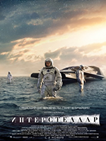

Когда засуха приводит человечество к продовольственному кризису, коллектив исследователей и учёных отправляется сквозь червоточину (которая предположительно соединяет области пространства-времени через большое расстояние) в путишествие, чтобы превзойти прежние ограничения для космических путешествий человека и переселить человечество на другую планету. Преследуемый призраками беспокойного прошлого Макс уверен, что лучший способ выжить - скитаться в одиночестве. Несмотря на это, он присоединяется к бунтарям, бегущим через всю пустыню на боевой фуре, под предводительством отчаянной Фуриосы. Они сбежали из Цитадели, страдающей от тирании Несмертного Джо, и забрали у него кое-что очень ценное. Разъярённый диктатор бросает все свои силы в погоню за мятежниками, ступая на тропу войны - дорогу ярости.
Преследуемый призраками беспокойного прошлого Макс уверен, что лучший способ выжить - скитаться в одиночестве. Несмотря на это, он присоединяется к бунтарям, бегущим через всю пустыню на боевой фуре, под предводительством отчаянной Фуриосы. Они сбежали из Цитадели, страдающей от тирании Несмертного Джо, и забрали у него кое-что очень ценное. Разъярённый диктатор бросает все свои силы в погоню за мятежниками, ступая на тропу войны - дорогу ярости.
 Жизнь Томаса Андерсона разделена на две части: днём он - самый обычный офисный работник, получающий нагоняи от начальства, а ночью превращается в хакера по имени Нео, и нет места в сети, куда он не смог бы дотянуться. Но однажды всё меняется — герой, сам того не желая, узнаёт страшную правду: всё, что его окружает — не более, чем иллюзия, Матрица, а люди — всего лишь источник питания для искусственного интеллекта, поработившего человечество. И только Нео под силу изменить расстановку сил в этом чужом и страшном мире.
Жизнь Томаса Андерсона разделена на две части: днём он - самый обычный офисный работник, получающий нагоняи от начальства, а ночью превращается в хакера по имени Нео, и нет места в сети, куда он не смог бы дотянуться. Но однажды всё меняется — герой, сам того не желая, узнаёт страшную правду: всё, что его окружает — не более, чем иллюзия, Матрица, а люди — всего лишь источник питания для искусственного интеллекта, поработившего человечество. И только Нео под силу изменить расстановку сил в этом чужом и страшном мире.
 События фильм будут одновременно развиваться в нескольких исторических периодах, как в прошлом так и в будущем. Начнется все с простого и короткого рассказа пастуха, а затем вы будете поэтапно переносится из века девятнадцатого в сторону сильно потрепанного из-за глобальной катастрофы будущего. Вы узнаете шесть жизненных историй: Юинг, юрист во время своего морского путешествия спас от смерти беглого раба и поборол неизвестный недуг;
События фильм будут одновременно развиваться в нескольких исторических периодах, как в прошлом так и в будущем. Начнется все с простого и короткого рассказа пастуха, а затем вы будете поэтапно переносится из века девятнадцатого в сторону сильно потрепанного из-за глобальной катастрофы будущего. Вы узнаете шесть жизненных историй: Юинг, юрист во время своего морского путешествия спас от смерти беглого раба и поборол неизвестный недуг;